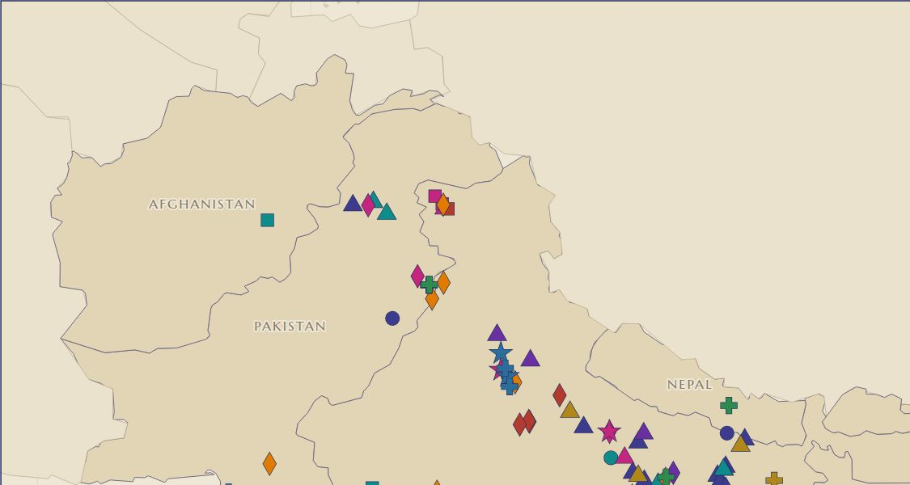
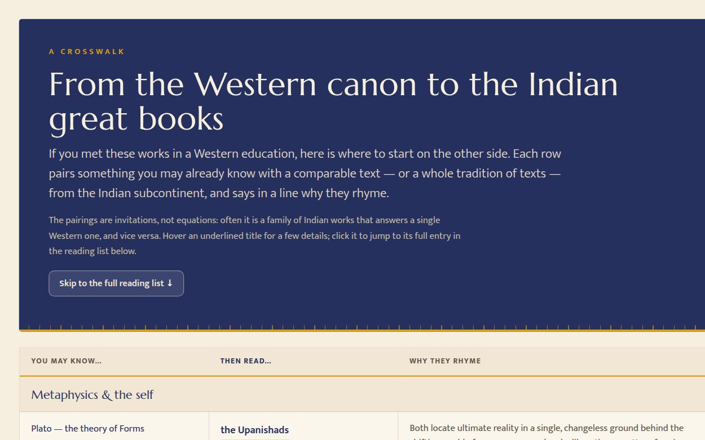
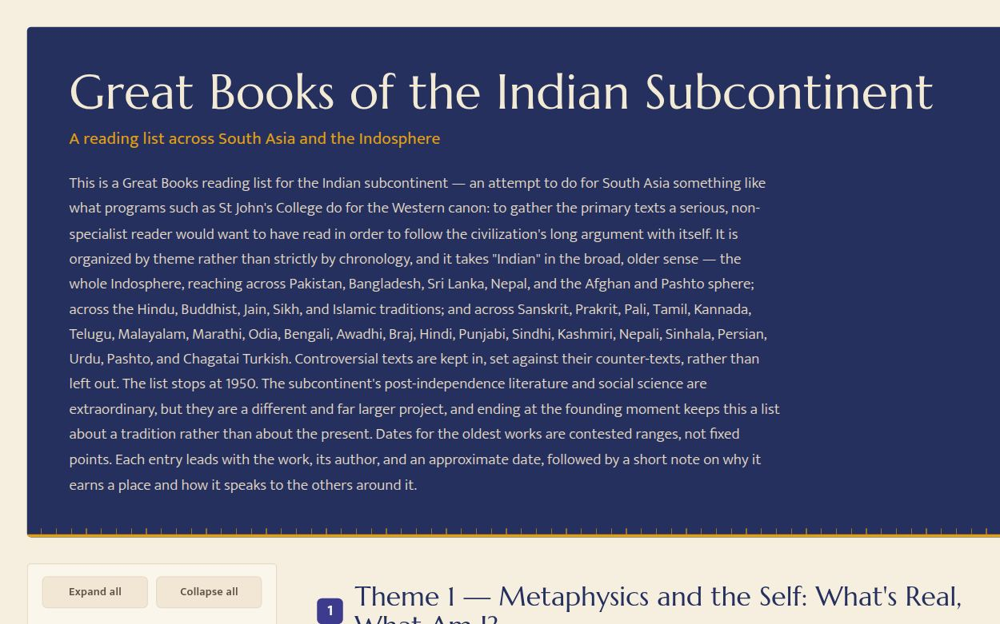

South Asia · The Indosphere
The primary texts a serious reader would want to have read to follow the subcontinent’s long argument with itself — across Hindu, Buddhist, Jain, Sikh, and Islamic traditions, from the Vedas to 1949, and across India, Pakistan, Bangladesh, Sri Lanka, Nepal, and the Afghan and Pashto sphere.

Every work mapped to where it was written — color-coded by theme, shaped by era. Filter, search, and zoom, in the map and an interactive table.

Know Euclid, Machiavelli, or the Iliad? See the comparable Indian text — or tradition of texts — and why they rhyme, then jump to the full entry.

The full list: some hundred and twenty works across nine themes, each with a note on why it earns a place and how it speaks to the others around it.
Organized by theme rather than strictly by chronology, this list takes “Indian” in the broad, older sense — the whole Indosphere — and spans Sanskrit, Prakrit and Pali, Tamil, Kannada, Telugu, Malayalam, Marathi, Odia, Bengali, Awadhi and Braj, Hindi, Punjabi, Sindhi, Kashmiri, Nepali, Sinhala, Persian, Urdu, Pashto, and Chagatai Turkish. Controversial texts are kept in, set against their counter-texts, rather than left out. The list stops at 1950.
Placements on the map and pairings in the crosswalk are scholarly approximations, not exact claims; dates for the oldest works are contested ranges. The prose reading list is also available as Markdown.